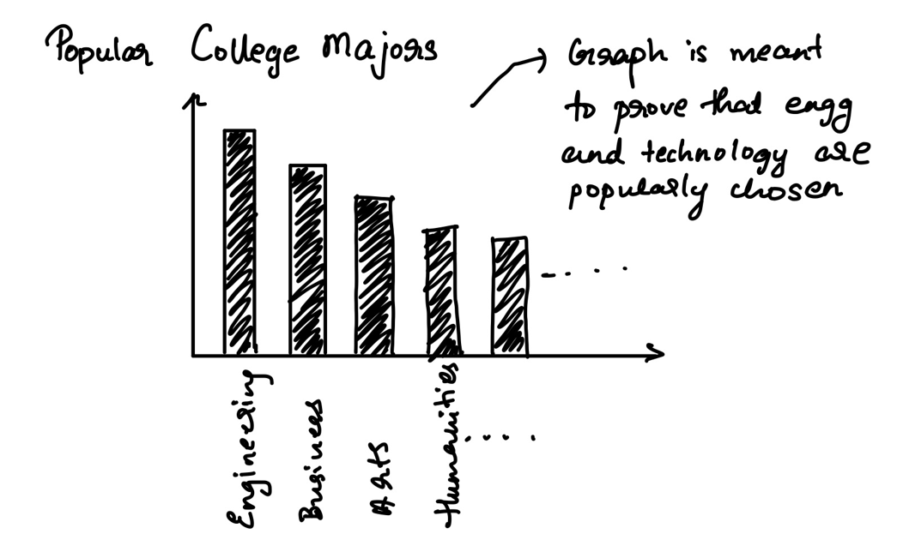
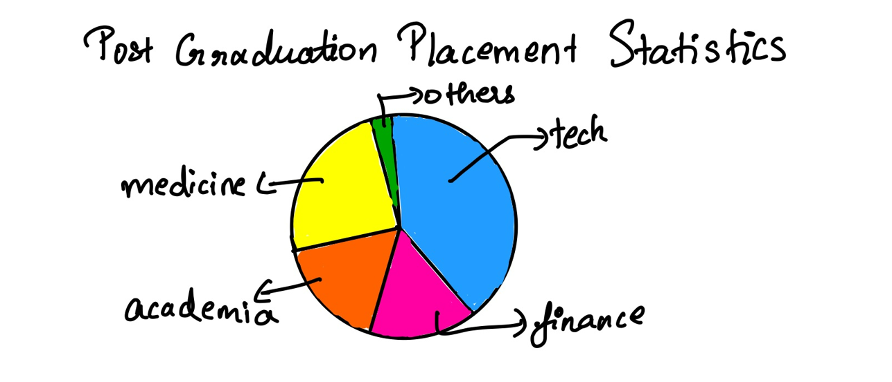
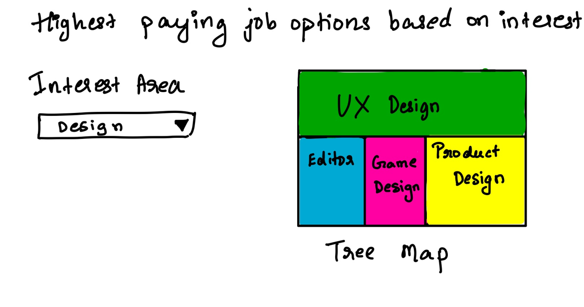

I come from India, where most parents force their children to pursue technical degrees since they believe that is the only way they can earn a decent wage and live a good life. A similar trent is prevalent in a lot of other countries including the US. With my story I aim to convince students and in turn parents that they do not have to fall into the trap of STEM degrees just for the sake of money. They can very easily live a great life and earn enough money doing whatever they want to. My intention behind posting comparision charts was also to show that there is not a lot of difference in the salaries earned in technical and non technical jobs and that students should be confident in their skillset as they can earn as much or in some cases even more than their technical peers
I come from India, where most parents force their children to pursue technical degrees since they believe that is the only way they can earn a decent wage and live a good life. A similar trent is prevalent in a lot of other countries including the US. With my story I aim to convince students and in turn parents that they do not have to fall into the trap of STEM degrees just for the sake of money. They can very easily live a great life and earn enough money doing whatever they want to. My intention behind posting comparision charts was also to show that there is not a lot of difference in the salaries earned in technical and non technical jobs and that students should be confident in their skillset as they can earn as much or in some cases even more than their technical peers
I first want to focus on the popular majors across colleges. The best way to represent this would be a bar graph since it can clearly show distinction across majors. I would expect the bar depicting engineering and technology to be very high
The next step would be showing how more and more students are moving towards tech degrees and a trend line chart is a great way of representing yearly trends
I would also be showing post gradution results in the form of a pie to prove that most students get technical jobs post graduation.
After establishing the premise about CEOs and founders with non technical backgrounds and proving that non technical degrees yield viable careers too, a bor chart showing salaries would be a great way to compare non technical professions
I also plan on having a salary comparision chart across states to show that tech as well as non tech salaries are comparable. Also this graph can give us an interesting insight about which states have a better career in non technical or creative fields
Finally, I want people to have the ability to view viable careers based on their interest. A dropdown can have several interests. And a tree map can show the potential careers complementing thei area of interest
| Data Name (Linked to source) | Purpose |
|---|---|
| Overall Salary survey-Source 1 | To get salaries across all industries. This information would help show if technical salaries are actually higher. I would also be using this data to identify high paying non technical jobs in big organizations |
| Overall Salary survey- Source 2 | To get salaries across all industries. This information would help show if technical salaries are actually higher. I would also be using this data to identify high paying non technical jobs in big organizations |
| Student Placement Data Source 2 | Summary of placement statistics and roles taken up post graduation. This information will help guide my story to show if more students are actually geared towards technical roles irrespective of their majors |
| Student Placement Data Source 2 | To get student placement data across all industries. Multiple sources can help offer more reliable information. This information will help guide my story to show if more students are actually geared towards technical roles irrespective of their majors |
| College Majors Statistics- Source 1 | Get college major statistics from five thirty eight to understand and identify popular college courses. This source would be used to understand and confirm if students are actually moving towards more technical majors or if software for example is the most popular major selection |
| College Majors Statistics- Source 2 | Get college major statistics from National Survey of College Graduates to understand and identify popular college course. This source would be used to understand and confirm if students are actually moving towards more technical majors or if software for example is the most popular major selections |
| Non Technical Founder Information- Source 1 | Get more insight into non technical CEOs of successful companies. I fould some quotes and backgrounds about many successful founders here who do not come from a technical background and wish to incorporate it to increase the moticational aspect of my project |
| Non Technical Founder Information- Source 2 | Get more insight into non technical CEOs of successful companies. I fould some quotes and backgrounds about many successful founders here who do not come from a technical background and wish to incorporate it to increase the moticational aspect of my project |
I really enjoyed exploring the features of shorthand and would be using that as the primary tool to host and display my story. Since I would also need to display a lot of charts, I plan on using flourish and Tableau to create the required charts that would depict my story better.
I really liked the idea of enlarging the main insight numbers so I plan to incorporate that to show data like “Percentage of people pursuing technical degrees etc”. I also plan on including quotations from famous CEOs who have creative degrees since that would create a better impact for my story. Finally, I would also want to explore more comparison techniques to prove that non tech jobs are just as attractive as tech jobs.
The critique in class gave me a stronger insight on my sketches. My peers mentioned that I could focus on one country instead of doing a more global approach and I plan on focussing on United States to give more focusses recommendation. They were also initially curious If my aim is to gear people towards non technical careers or majors and this is something I am still thinking about. But I currently am leaning towards non technical careers over majors since I do not want to impose the thought that you need some kind of a degree to be successful. In one of my visualizations I mentioned a comparision between tech and non tech and one of my peers suggested I give more details on what I mean by tech and non tech. This is something I plan on exploring further. Finally they recommended focusing on tech job data in my college placement data and graying out everything else. While I do think that may have value I want to hold out on that since I want to see if I can derive any insights from what I find here too